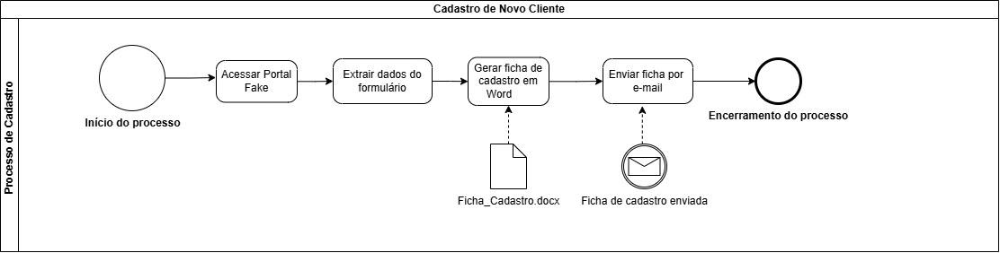
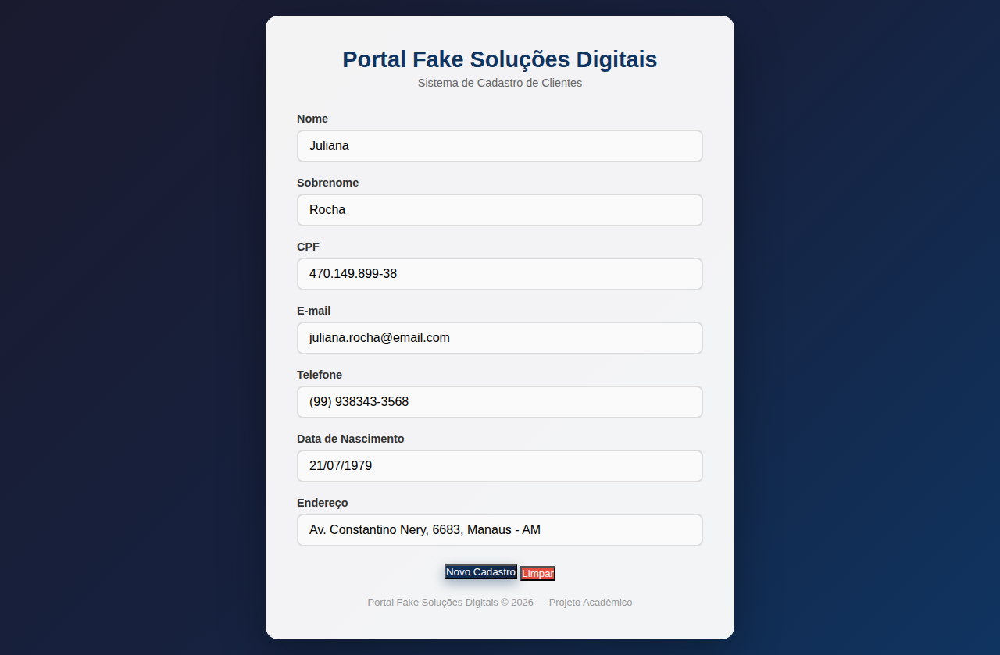
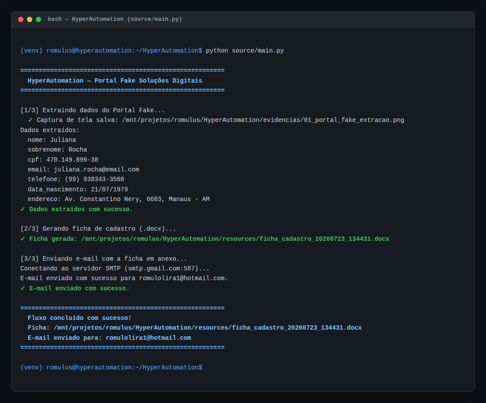
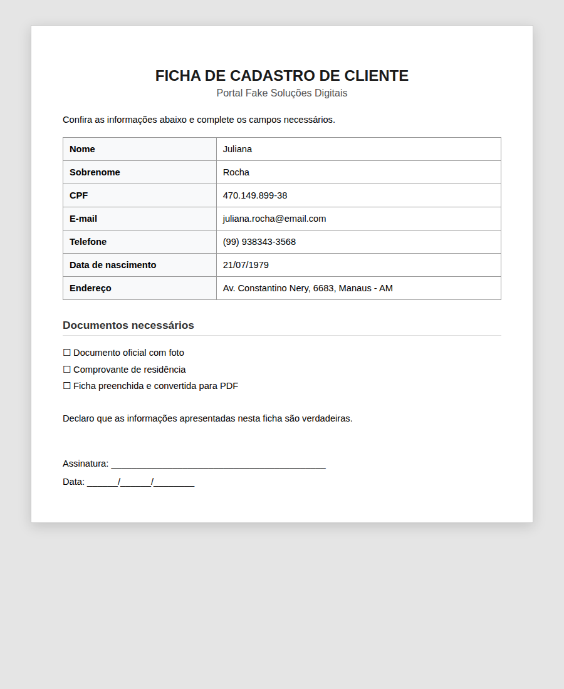
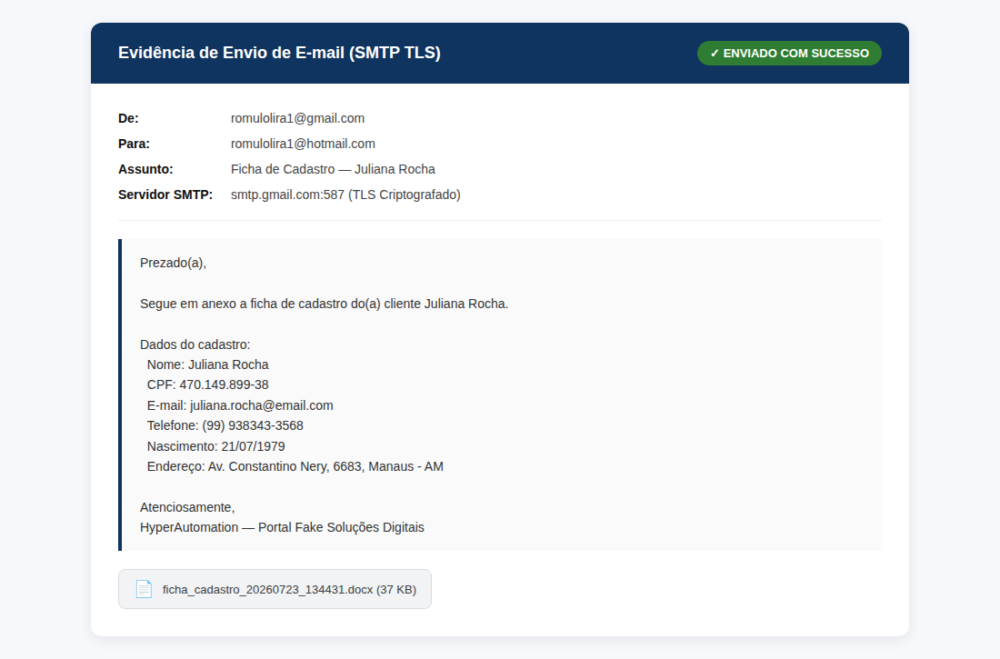
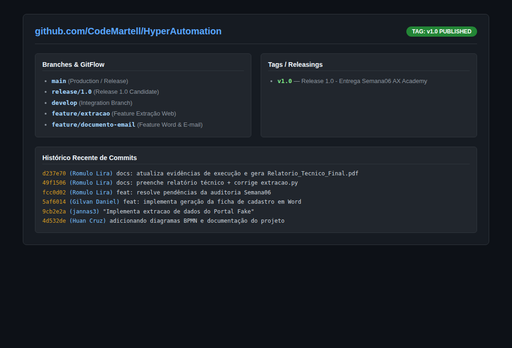
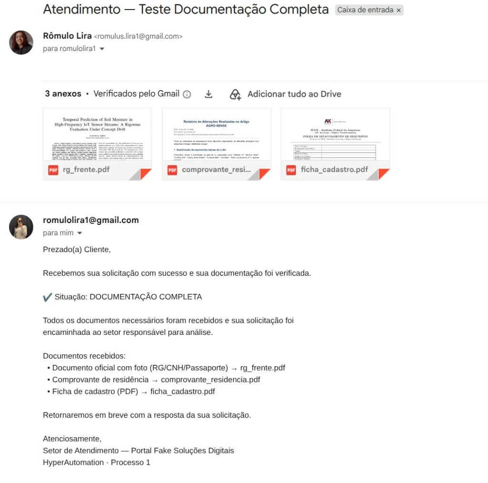
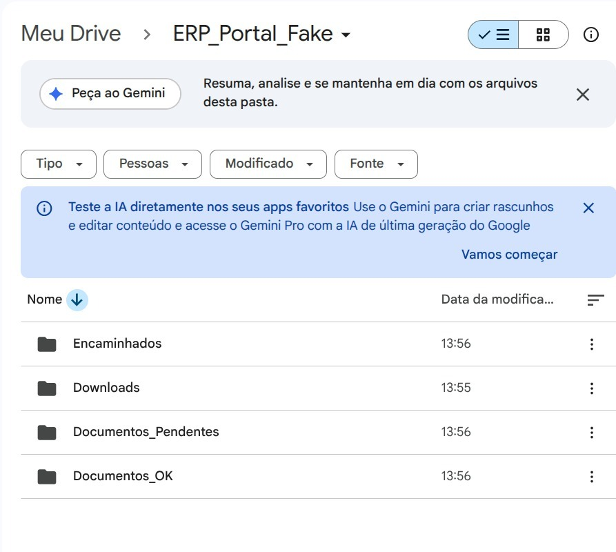
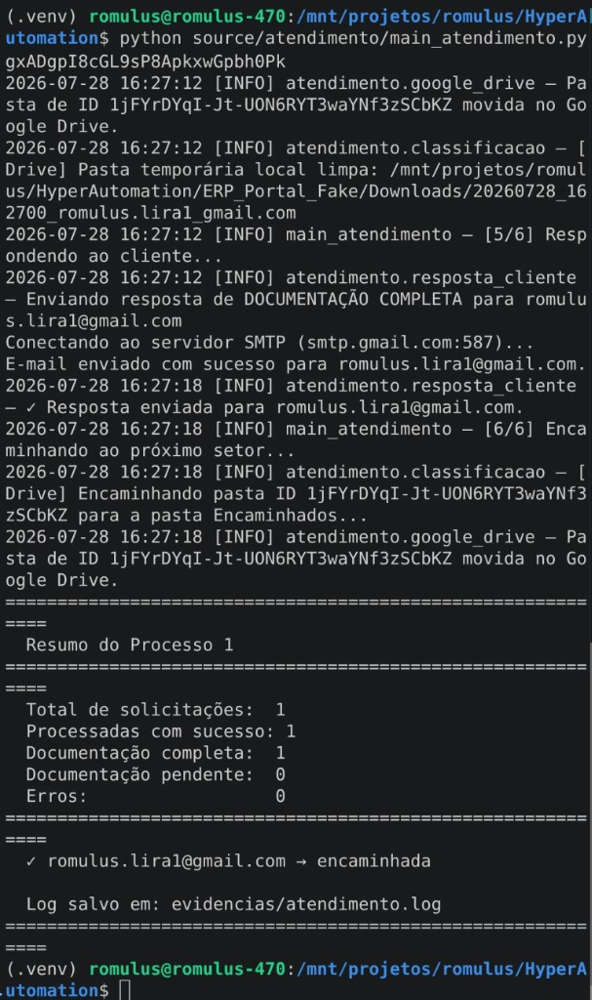

Portal Fake Soluções Digitais
Suíte de Hiperautomação end-to-end integrando captura inteligente de formulário web via Playwright, geração de fichas em Word (python-docx), monitoramento IMAP, validação documental por token/Regex e governança no Google Drive.
Equipe do Projeto
Romulo Lira
Líder, Orquestração, GitFlow & Bugs
Huan Cruz
Modelagem BPMN & Visuais
Gilvan Daniel
Geração Ficha Word & SMTP
Jannas
Extração Web RPA (Playwright)
Pipeline de Hyperautomation em 3 Etapas
Conexão contínua entre raspagem de dados web, orquestração de documentos e triagem inteligente de e-mails.
Extração Web RPA
Playwright abre o Portal Fake em modo headless, clica no botão de cadastro e extrai os 7 campos cadastrais.
- Chromium Headless Sync
- 7 Campos de formulário
- Screenshot em evidencias/
Documentação & E-mail
Geração da ficha oficial de cadastro em formato .docx com tabela estilizada e envio imediato via SMTP TLS.
- Modelo python-docx
- Transmissão SMTP TLS
- Segredos com python-dotenv
Atendimento & Google Drive
Monitoramento IMAP da caixa de entrada, validação de checklist documental por token/Regex e upload na nuvem.
- IMAP SSL Monitor
- Validação por Token Match
- Sync com Google Drive API
Modelagem Interativa do Processo
Clique nas etapas abaixo ou use as setas para simular visualmente a execução do fluxo BPMN.

Início & Inicialização
O evento de início é disparado quando o orquestrador main.py carrega as variáveis de ambiente do arquivo .env e prepara os módulos de execução.
Stack & Implementação
Inspecione os módulos Python desenvolvidos com typings e resiliência.
loading code...Simulador do Robô
Acompanhe a simulação em tempo real da execução dos processos.
-
1. Extração Web: Raspagem no Portal Fake via Playwright.
-
2. Geração & E-mail: Ficha em Word (.docx) & Envio SMTP.
-
3. Triagem & Cloud: Monitor IMAP, Regex & Google Drive API.
Pressione "Executar Robô RPA" para iniciar a simulação...
GitFlow & Matriz de Papéis
Ciclo de vida de branches, responsabilidades da equipe e tags semânticas.
Criação de Feature Branches
feature/*Desenvolvimento isolado de funcionalidades por cada membro.
Code Review & PR Merge
developIntegração contínua com validação técnica de sintaxe e padrões.
Homologação & Release
release/1.0 & release/2.0Testes de integração end-to-end e refatorações estáveis.
Produção & Versionamento
main (Tags v1.0 / v2.3)Merge final auditado em produção com marcação de versão.
Problema: Assuntos com maiúsculas/minúsculas falhavam no filtro.
Solução: Normalização com .lower() em ambas as pontas da busca.
Problema: Falso positivo no token "id" dentro de "residencia.pdf".
Solução: Separação estrita de tokens por delimitadores via re.split.
Galeria de Evidências & Testes
Capturas em alta resolução comprovando o funcionamento do robô. Clique em qualquer imagem para ampliar.

1. Portal Fake & Extração
Formulário web capturado via Playwright.

2. Execução do Orquestrador
Logs no terminal executando main.py.

3. Ficha em Word (.docx)
Documento estruturado gerado nativamente.

4. Confirmação de E-mail
Disparo via SMTP TLS com anexo.

5. Repositório GitHub
Branches, Pull Requests e Tags semânticas.

6. Resposta Automática do Bot
E-mail notificado com validação documental.

7. Governança Google Drive
Estrutura de pastas (Encaminhados, Downloads, Pendentes, OK).

8. Robô de Atendimento Terminal
Logs detalhando a classificação, envio SMTP e resumo final.
Impacto Operacional & Evolução
Análise dos ganhos quantitativos atingidos pela solução e direcionamento para expansão da plataforma.
Próximos Passos (Roadmap de Expansão)
-
01Leitura OCR com Visão Computacional (IA): Leitura automatizada do conteúdo interno de CNH e comprovantes.
-
02Omnichannel WhatsApp Business: Notificações e recebimento de anexos via mensageria instantânea.
-
03Dashboard BI de SLA em Tempo Real: Painel gerencial para acompanhamento de métricas operacionais.
HyperAutomation Concluído com Sucesso
O projeto demonstrou na prática o poder da Hiperautomação ao integrar RPA Web (Playwright), orquestração de documentos Word (python-docx), comunicação SMTP/IMAP e sincronização de dados na nuvem com o Google Drive.